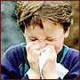

В США у родителей все еще сохраняются ряд ошибочных и неправильных представлений о том, что такое насморк и как он передается. Данной проблеме был посвящен доклад ученых из Гарварда на ежегодной конференции Американского общества инфекционных болезней.
В США у родителей все еще сохраняются ряд ошибочных и неправильных представлений о том, что такое насморк и как он передается. Данной проблеме был посвящен доклад ученых из Гарварда на ежегодной конференции Американского общества инфекционных болезней.
Исследователи провели опрос 161 семьи из разных социально-экономических слоев Массачусетса, в которых есть как минимум один ребенок в возрасте от 6 месяцев до 5 лет, посещающий детские дошкольные учреждения. 95% респондентов были женщины, средний возраст которых составил 34 года.
Для исследователей были неожиданными следующие факты: 60% опрошенных полагают, что насморк вызывают бактерии, а около 50% респондентов считают, что насморк следует лечить антибиотиками.
46% опрошенных думают, что насморк может быть вызван недостаточным количеством одежды, 57% - холодной погодой и 37% полагают, что можно подхватить насморк, если выйти на улицу с мокрой головой.
90% родителей считают, что мерой профилактики насморка является использование раздельной посуды. Только 3/4 опрошенных знали, что насморк может передаваться при рукопожатии.
В то время как 74% родителей знали, что частое мытье рук может помочь детям не подхватить насморк, только 14% были осведомлены о алкогольсодержащих гелях, которые более эффективны против риновирусов.
Medscape